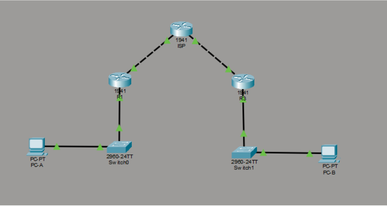
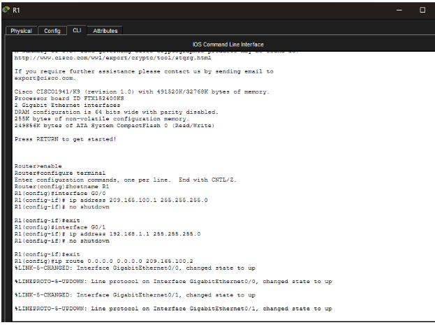
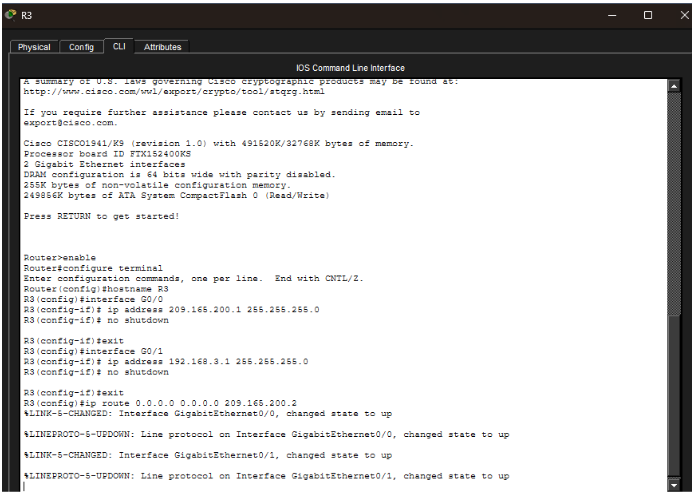
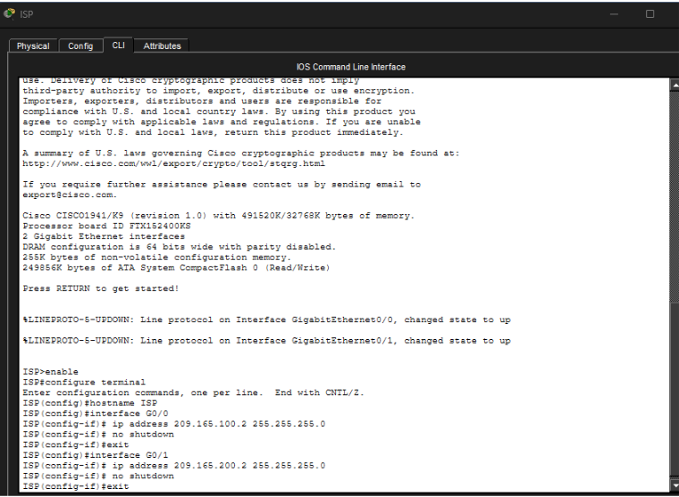

Introducción contextual
En esta actividad configuramos una VPN Site‑to‑Site utilizando IPSec para conectar dos redes de manera segura. A través de la topología y los comandos aplicados, pude comprender mejor cómo se establecen los túneles, cómo se define el tráfico que será cifrado y cómo se integran las fases de negociación para asegurar la comunicación entre los sitios.
Topología de Red

La topología utilizada para la actividad consta de los siguientes dispositivos interconectados:
- Router ISP: Modelo 1941 (Intermediario)
- Router R1: Modelo 1941 (Sitio A)
- Router R3: Modelo 1941 (Sitio B)
- Switches: 2960-24TT (Switch0 y Switch1)
- Dispositivos finales: PC-A y PC-B
Configuración Inicial de Dispositivos
Configuración del Router 1 (R1)

Router> enable
Router# configure terminal
Router(config)# hostname R1
R1(config)# interface g0/0
R1(config-if)# ip address 209.165.100.1 255.255.255.0
R1(config-if)# no shutdown
R1(config-if)# exit
R1(config)# interface g0/1
R1(config-if)# ip address 192.168.1.1 255.255.255.0
R1(config-if)# no shutdown
R1(config)# ip route 0.0.0.0 0.0.0.0 209.165.100.2
Configuración del Router 3 (R3)

Router> enable
Router# configure terminal
Router(config)# hostname R3
R3(config)# interface g0/0
R3(config-if)# ip address 209.165.200.1 255.255.255.0
R3(config-if)# no shutdown
R3(config-if)# exit
R3(config)# interface g0/1
R3(config-if)# ip address 192.168.3.1 255.255.255.0
R3(config-if)# no shutdown
R3(config-if)# exit
R3(config)# ip route 0.0.0.0 0.0.0.0 209.165.200.2
Configuración de ISP

ISP> enable
ISP# configure terminal
ISP(config)# hostname ISP
ISP(config)# interface g0/0
ISP(config-if)# ip address 209.165.100.2 255.255.255.0
ISP(config-if)# no shutdown
ISP(config-if)# exit
ISP(config)# interface g0/1
ISP(config-if)# ip address 209.165.200.2 255.255.255.0
ISP(config-if)# no shutdown
ISP(config-if)# exit
Configuración de Dispositivos Finales (PCs)
| Dispositivo |
Interfaz |
Dirección IP |
Máscara de Subred |
Gateway |
| PC-A |
FastEthernet0 |
192.168.1.10 |
255.255.255.0 |
192.168.1.1 |
| PC-B |
FastEthernet0 |
192.168.3.10 |
255.255.255.0 |
192.168.3.1 |
Configuración de Seguridad (VPN IPSec Site-to-Site)
3. Implementación de ACLs
Se define el tráfico interesante que pasará por la VPN.
access-list 100 permit ip 192.168.3.0 0.0.0.255 192.168.1.0 0.0.0.255
4. Phase 01: ISAKMP Policy
Establecimiento de las políticas de negociación para la fase 1.
crypto isakmp policy 10
encryption aes 256
authentication pre-share
group 5
exit
crypto isakmp key secretkey address 209.165.100.1
5. Phase 02: IPSec Transform-Set
Definición de los algoritmos de cifrado y autenticación para los datos.
crypto ipsec transform-set R3-R1 esp-aes 256 esp-sha-hmac
6. Crear el Mapa Criptográfico
Vinculación de la política, el peer y la lista de acceso.
crypto map IPSEC-MAP 10 ipsec-isakmp
set peer 209.165.100.1
set transform-set R3-R1
set pfs group5
set security-association lifetime seconds 86400
match address 100
exit
7. Aplicar el Mapa Criptográfico
Aplicación del mapa en la interfaz de salida.
int g0/0
crypto map IPSEC-MAP
exit
Conclusión
Para asegurar la conexión, primero habilité la licencia de seguridad y configuré la ACL 100 para identificar el tráfico que debe protegerse. Luego, establecí las políticas de negociación en la Fase 1 y definí el método de cifrado de datos en la Fase 2 mediante el Transform-Set. Finalmente, integré todo en un Mapa Criptográfico que vincula al router destino con la lista de acceso, aplicándolo directamente en la interfaz de salida.